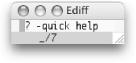
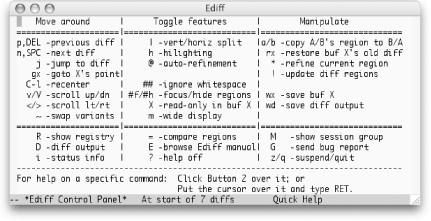
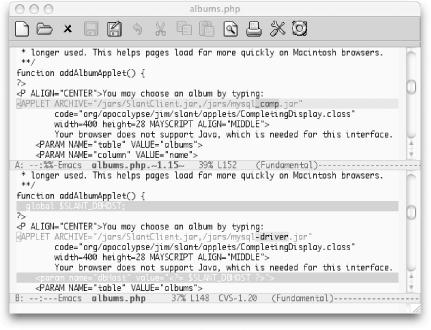

{% include JB/setup %}
{% raw %}
<div>
<div class="book" xml:lang="en"><div class="book"><div class="book"><div class="book"><h1 class="title"><a id="gnu3-CHP-12-SECT-13" class="calibre1"></a>Comparing with Ediff</h1></div></div></div><p class="copyright">In working with any version control <a id="gnu3-CHP-12-ITERM-2910" class="calibre2"></a>
            <a id="gnu3-CHP-12-ITERM-2911" class="calibre2"></a>system,
you sometimes want to compare different revisions of a file. Often
you're interested in what's changed
in the current working revision, but sometimes
you're after more historical information. The most
challenging situation arises when an optimistic strategy like CVS is
proved wrong, and you need to merge incompatible changes made by
multiple developers to the same section of a file.</p><p class="copyright">We've already described <span><strong class="calibre5">vc-diff</strong></span>, VC's built-in
facility for helping with these tasks. We would be remiss, however,
if we did not introduce you to Ediff, an even more powerful facility
that is available in current releases of GNU Emacs. Ediff is
extremely rich; it almost feels like another program that
"takes over" your Emacs session for
a while. Full coverage would require an entire chapter, or perhaps
even its own handbook, but this introduction will get you started and
point you at the built-in manual if you want to delve deeper.</p><div class="book" xml:lang="en"><div class="book"><div class="book"><div class="book"><h2 class="title1"><a id="gnu3-CHP-12-SECT-13.1" class="calibre1"></a>Starting Ediff</h2></div></div></div><p class="copyright">For the most part, you launch
<a id="gnu3-CHP-12-ITERM-2912" class="calibre2"></a>Ediff
as an independent entity rather than having it invoked automatically
by the version control interface. The exception (as mentioned above)
is if you ask Emacs for help resolving conflicts when they occur
during a check-in operation or manually invoke <span><strong class="calibre5">vc-resolve-conflicts</strong></span> while visiting a buffer
containing such conflicts.</p><p class="copyright">If you want to use Ediff to compare two nonconflicting revisions of a
file, choose Tools <span>→</span> Compare (Ediff) <span>→</span> File with
revision, or type <span><strong class="calibre5">M-x</strong></span> 
               <span><strong class="calibre5">ediff-revision</strong></span> 
               <span><strong class="calibre5">Enter</strong></span>. Ediff prompts you for the file
you'd like to compare (defaulting to the file
associated with the current buffer), and the revision(s)
you'd like to compare, defaulting to the version
last checked in and the current state of the buffer. (Ediff can also
be used for many tasks outside the context of version control
systems; you might want to explore the options on the Compare (Ediff)
menu on a rainy day.)</p><p class="copyright">The first time you invoke Ediff, you will probably find it
disorienting. In addition to the expected pair of buffers showing you
the two files or revisions being compared, it pops open a small
"control window" (see <a class="calibre2" href="ch12s13.html#gnu3-CHP-12-FIG-4" title="Figure 12-4. The Ediff control window in its default state (Mac OS X)">Figure 12-4</a>) in which you type commands. In its default
configuration, this is a separate operating system window (or what
Emacs refers to as a "frame"). For
Ediff commands to work, this window must have keyboard focus (must
show as being the currently active window as far as the operating
system is concerned). This is different from almost any other
situation in Emacs, in that you're looking at and
manipulating content in one frame while a second frame has focus.</p><div class="figure"><a id="gnu3-CHP-12-FIG-4" class="calibre2"></a><div class="figure-contents"><div class="mediaobject"><a id="I_12_tt659" class="calibre2"></a></div></div><p class="title3"><b class="calibre25">Figure 12-4. The Ediff control window in its default state (Mac OS X)</b></p></div><br class="book"/><p class="copyright">In its default configuration, the control window is designed to be
small enough not to get in the way on smaller displays. The problem
is that you might not even notice it, let alone realize what
it's for! In addition to being the place you type
Ediff commands, this small window shows you where you are in the
difference list (in this case, before the first of seven
differences), and reminds you that you can type <span><strong class="calibre5">?</strong></span> to get some more help. As a new Ediff user,
we strongly recommend that you type <span><strong class="calibre5">?</strong></span> each time you fire it up to expand the
control window into the larger, Quick Help mode, shown in <a class="calibre2" href="ch12s13.html#gnu3-CHP-12-FIG-5" title="Figure 12-5. The Ediff control window showing Quick Help (Mac OS X)">Figure 12-5</a>.</p><div class="figure"><a id="gnu3-CHP-12-FIG-5" class="calibre2"></a><div class="figure-contents"><div class="mediaobject"><a id="I_12_tt660" class="calibre2"></a></div></div><p class="title3"><b class="calibre25">Figure 12-5. The Ediff control window showing Quick Help (Mac OS X)</b></p></div><br class="book"/><p class="copyright">In addition to the control window, you'll see the
differences between the files you're comparing
inside the frame you were previously using for editing. If
you're looking at a large file, none of the
differences might be visible initially. You can jump to the first
difference by typing <span><strong class="calibre5">n</strong></span> or pressing
the space bar, as suggested by the quick help window. (Remember that
for any of the Ediff commands to work, the control/quick help window
<span><em class="calibre7">must</em></span> have keyboard focus.) The displayed
differences will look something like <a class="calibre2" href="ch12s13.html#gnu3-CHP-12-FIG-6" title="Figure 12-6. Differences displayed by Ediff">Figure 12-6</a>.</p><div class="figure"><a id="gnu3-CHP-12-FIG-6" class="calibre2"></a><div class="figure-contents"><div class="mediaobject"><a id="I_12_tt661" class="calibre2"></a></div></div><p class="title3"><b class="calibre25">Figure 12-6. Differences displayed by Ediff</b></p></div><br class="book"/><p class="copyright">Ediff centers the difference regions within each buffer, and marks
the changed lines with color, further emphasizing the specific
portions of the lines which have changed to help attract visual
attention to the differences. This is much more helpful than the
traditional diff mode, making it worthwhile learning the strange new
interface.</p></div><div class="book" xml:lang="en"><div class="book"><div class="book"><div class="book"><h2 class="title1"><a id="gnu3-CHP-12-SECT-13.2" class="calibre1"></a>Using Ediff</h2></div></div></div><p class="copyright">The basic way to use Ediff is to scroll through the buffers, seeing
what has changed between them. The normal Emacs
"browsing" keys (<span><strong class="calibre5">Space</strong></span> to move forward, <span><strong class="calibre5">Del</strong></span> to move backward) are bound in the control
window to take you through the differences one by one. Pressing
<span><strong class="calibre5">n</strong></span> (next) and <span><strong class="calibre5">p</strong></span> (previous) has the same effect. If you want
to go to a specific difference, you can type a number followed by
<span><strong class="calibre5">j</strong></span> (jump) to move immediately to that
difference. To scroll up or down by pages rather than by differences
you can use <span><strong class="calibre5">v</strong></span> to move forward and
<span><strong class="calibre5">V</strong></span> to move backward. If your buffers
contain wide lines, you can also type <span><strong class="calibre5">&lt;</strong></span> and <span><strong class="calibre5">&gt;</strong></span>
to scroll left and right. If you'd like to view the
buffers side by side rather than one above the other, type <span><strong class="calibre5">|</strong></span> (vertical bar). Typing this a second time
returns to showing the buffers vertically. To reduce the need to
scroll horizontally, you can make the comparison window as wide as
possible by typing <span><strong class="calibre5">m</strong></span> (this is also a
toggle; typing it again returns the window to its previous width).
This command might cause the control window to lose focus, forcing
you to click back into it before issuing the next Ediff command. (See
"Recovering from Confusion" later
in this chapter.) Important
<a id="gnu3-CHP-12-ITERM-2913" class="calibre2"></a>
               <a id="gnu3-CHP-12-ITERM-2914" class="calibre2"></a>commands
available in Ediff are summarized in <a class="calibre2" href="ch12s13.html#gnu3-CHP-12-TABLE-2" title="Table 12-2. Ediff commands">Table 12-2</a>.</p><div class="book"><a id="gnu3-CHP-12-TABLE-2" class="calibre2"></a><p class="title2"><b class="calibre25">Table 12-2. Ediff commands</b></p><div class="table-contents"><table summary="Ediff commands" class="calibre8"><colgroup class="calibre9"><col class="calibre10"/><col class="calibre10"/><col class="calibre10"/></colgroup><thead class="calibre11"><tr class="calibre12"><th class="calibre26">
                           <p class="copyright">
                              <span><strong class="calibre5">Keystrokes</strong></span>
                           </p>
                        </th><th class="calibre26">
                           <p class="copyright">
                              <span><strong class="calibre5">Command name</strong></span>
                           </p>
                        </th><th class="calibre27">
                           <p class="copyright">
                              <span><strong class="calibre5">Action</strong></span>
                           </p>
                        </th></tr></thead><tbody class="calibre15"><tr class="calibre12"><td class="calibre28">
                           <p class="copyright">
                              <span><strong class="calibre5">Space</strong></span> or <span><strong class="calibre5">n</strong></span>
                           </p>
                        </td><td class="calibre28">
                           <p class="copyright">
                              <span><strong class="calibre5">ediff-next-difference</strong></span>
                           </p>
                        </td><td class="calibre29">
                           <p class="copyright">Move to the next difference between the files.</p>
                        </td></tr><tr class="calibre12"><td class="calibre28">
                           <p class="copyright">
                              <span><strong class="calibre5">Del</strong></span> or <span><strong class="calibre5">p</strong></span>
                           </p>
                        </td><td class="calibre28">
                           <p class="copyright">
                              <span><strong class="calibre5">ediff-previous-difference</strong></span>
                           </p>
                        </td><td class="calibre29">
                           <p class="copyright">Move to the preceding difference between the files.</p>
                        </td></tr><tr class="calibre12"><td class="calibre28">
                           <p class="copyright">
                              <span><strong class="calibre5">j</strong></span>
                           </p>
                        </td><td class="calibre28">
                           <p class="copyright">
                              <span><strong class="calibre5">ediff-jump-to-difference</strong></span>
                           </p>
                        </td><td class="calibre29">
                           <p class="copyright">Go to the difference specified as a numeric prefix argument.</p>
                        </td></tr><tr class="calibre12"><td class="calibre28">
                           <p class="copyright">
                              <span><strong class="calibre5">v</strong></span> or <span><strong class="calibre5">C-v</strong></span>
                           </p>
                        </td><td class="calibre28">
                           <p class="copyright">
                              <span><strong class="calibre5">ediff-scroll-vertically</strong></span>
                           </p>
                        </td><td class="calibre29">
                           <p class="copyright">Move forward one page in both buffers.</p>
                        </td></tr><tr class="calibre12"><td class="calibre28">
                           <p class="copyright">
                              <span><strong class="calibre5">V</strong></span> or <span><strong class="calibre5">M-v</strong></span>
                           </p>
                        </td><td class="calibre28">
                           <p class="copyright">
                              <span><strong class="calibre5">ediff-scroll-vertically</strong></span>
                           </p>
                        </td><td class="calibre29">
                           <p class="copyright">Move backward one page in both buffers.</p>
                        </td></tr><tr class="calibre12"><td class="calibre28">
                           <p class="copyright">
                              <span><strong class="calibre5">&lt;</strong></span>
                           </p>
                        </td><td class="calibre28">
                           <p class="copyright">
                              <span><strong class="calibre5">ediff-scroll-horizontally</strong></span>
                           </p>
                        </td><td class="calibre29">
                           <p class="copyright">Scroll each buffer to the left.</p>
                        </td></tr><tr class="calibre12"><td class="calibre28">
                           <p class="copyright">
                              <span><strong class="calibre5">&gt;</strong></span>
                           </p>
                        </td><td class="calibre28">
                           <p class="copyright">
                              <span><strong class="calibre5">ediff-scroll-horizontally</strong></span>
                           </p>
                        </td><td class="calibre29">
                           <p class="copyright">Scroll each buffer to the right.</p>
                        </td></tr><tr class="calibre12"><td class="calibre28">
                           <p class="copyright">
                              <span><strong class="calibre5">|</strong></span> (vertical bar)</p>
                        </td><td class="calibre28">
                           <p class="copyright">
                              <span><strong class="calibre5">ediff-toggle-split</strong></span>
                           </p>
                        </td><td class="calibre29">
                           <p class="copyright">Switch between viewing the buffers one above the other and
side-by-side.</p>
                        </td></tr><tr class="calibre12"><td class="calibre28">
                           <p class="copyright">
                              <span><strong class="calibre5">m</strong></span>
                           </p>
                        </td><td class="calibre28">
                           <p class="copyright">
                              <span><strong class="calibre5">ediff-toggle-wide-display</strong></span>
                           </p>
                        </td><td class="calibre29">
                           <p class="copyright">Toggle between normal frame size and making it as wide as possible.</p>
                        </td></tr><tr class="calibre12"><td class="calibre28">
                           <p class="copyright">
                              <span><strong class="calibre5">a</strong></span>
                           </p>
                        </td><td class="calibre28">
                           <p class="copyright">
                              <span><strong class="calibre5">ediff-copy-A-to-B</strong></span>
                           </p>
                        </td><td class="calibre29">
                           <p class="copyright">Copy the version of the current difference found in buffer A to
buffer B.</p>
                        </td></tr><tr class="calibre12"><td class="calibre28">
                           <p class="copyright">
                              <span><strong class="calibre5">b</strong></span>
                           </p>
                        </td><td class="calibre28">
                           <p class="copyright">
                              <span><strong class="calibre5">ediff-copy-B-to-A</strong></span>
                           </p>
                        </td><td class="calibre29">
                           <p class="copyright">Copy the version of the current difference found in buffer B to
buffer A.</p>
                        </td></tr><tr class="calibre12"><td class="calibre28">
                           <p class="copyright">
                              <span><strong class="calibre5">r a</strong></span> or <span><strong class="calibre5">r
b</strong></span>
                           </p>
                        </td><td class="calibre28">
                           <p class="copyright">
                              <span><strong class="calibre5">ediff-restore-diff</strong></span>
                           </p>
                        </td><td class="calibre29">
                           <p class="copyright">Restore the current difference in buffer A (or B) to the way it was
before copying from the other buffer.</p>
                        </td></tr><tr class="calibre12"><td class="calibre28">
                           <p class="copyright">
                              <span><strong class="calibre5">A</strong></span> or <span><strong class="calibre5">B</strong></span>
                           </p>
                        </td><td class="calibre28">
                           <p class="copyright">
                              <span><strong class="calibre5">ediff-toggle-read-only</strong></span>
                           </p>
                        </td><td class="calibre29">
                           <p class="copyright">Switch the specified buffer into (or out of) read-only mode.</p>
                        </td></tr><tr class="calibre12"><td class="calibre28">
                           <p class="copyright">
                              <span><strong class="calibre5">g a</strong></span> or <span><strong class="calibre5">g
b</strong></span>
                           </p>
                        </td><td class="calibre28">
                           <p class="copyright">
                              <span><strong class="calibre5">ediff-jump-to-difference-at-point</strong></span>
                           </p>
                        </td><td class="calibre29">
                           <p class="copyright">Recenter the comparison buffers on the difference nearest to your
current location (point) in the specified buffer.</p>
                        </td></tr><tr class="calibre12"><td class="calibre28">
                           <p class="copyright">
                              <span><strong class="calibre5">C-l</strong></span>
                           </p>
                        </td><td class="calibre28">
                           <p class="copyright">
                              <span><strong class="calibre5">ediff-recenter</strong></span>
                           </p>
                        </td><td class="calibre29">
                           <p class="copyright">Restore the comparison display so that the highlighted regions of all
buffers being compared are visible; useful if you've
been doing something else and want to get back to comparing.</p>
                        </td></tr><tr class="calibre12"><td class="calibre28">
                           <p class="copyright">
                              <span><strong class="calibre5">!</strong></span>
                           </p>
                        </td><td class="calibre28">
                           <p class="copyright">
                              <span><strong class="calibre5">ediff-update-diffs</strong></span>
                           </p>
                        </td><td class="calibre29">
                           <p class="copyright">Recalculate and redisplay the highlighted regions; useful if
you've manually made extensive changes to a buffer.</p>
                        </td></tr><tr class="calibre12"><td class="calibre28">
                           <p class="copyright">
                              <span><strong class="calibre5">w a</strong></span> or <span><strong class="calibre5">w
b</strong></span>
                           </p>
                        </td><td class="calibre28">
                           <p class="copyright">
                              <span><strong class="calibre5">ediff-save-buffer</strong></span>
                           </p>
                        </td><td class="calibre29">
                           <p class="copyright">Save the specified buffer to disk.</p>
                        </td></tr><tr class="calibre12"><td class="calibre28">
                           <p class="copyright">
                              <span><strong class="calibre5">E</strong></span>
                           </p>
                        </td><td class="calibre28">
                           <p class="copyright">
                              <span><strong class="calibre5">ediff-documentation</strong></span>
                           </p>
                        </td><td class="calibre29">
                           <p class="copyright">Open the manual for Ediff.</p>
                        </td></tr><tr class="calibre12"><td class="calibre28">
                           <p class="copyright">
                              <span><strong class="calibre5">z</strong></span>
                           </p>
                        </td><td class="calibre28">
                           <p class="copyright">
                              <span><strong class="calibre5">ediff-suspend</strong></span>
                           </p>
                        </td><td class="calibre29">
                           <p class="copyright">Close the Ediff control window, but leave the session active so you
can resume it later.</p>
                        </td></tr><tr class="calibre12"><td class="calibre30">
                           <p class="copyright">
                              <span><strong class="calibre5">q</strong></span>
                           </p>
                        </td><td class="calibre30">
                           <p class="copyright">
                              <span><strong class="calibre5">ediff-quit</strong></span>
                           </p>
                        </td><td class="calibre31">
                           <p class="copyright">Close the Ediff window and end this comparison session.</p>
                        </td></tr></tbody></table></div></div><br class="book"/></div><div class="book" xml:lang="en"><div class="book"><div class="book"><div class="book"><h2 class="title1"><a id="gnu3-CHP-12-SECT-13.3" class="calibre1"></a>Making Changes</h2></div></div></div><p class="copyright">In addition to simply<a id="gnu3-CHP-12-ITERM-2915" class="calibre2"></a>
viewing the differences between files, you will sometimes want to
resolve or merge them (especially if you've entered
Ediff as the result of conflicts that occurred while checking in a
file revision). Several commands help with this, and they generally
require you to choose which buffer you want to work from. As you
might have noticed in <a class="calibre2" href="ch12s13.html#gnu3-CHP-12-FIG-5" title="Figure 12-5. The Ediff control window showing Quick Help (Mac OS X)">Figure 12-5</a>, Ediff assigns each file or
revision buffer a letter to identify it: <code class="calibre21">A</code>,
<code class="calibre21">B</code> and sometimes <code class="calibre21">C</code> if you are
comparing three things. A number of Ediff commands work with these
buffer identifiers—the letter <code class="calibre21">X</code> is used to
stand for these labels in the quick help window for most commands
that use them.</p><p class="copyright">To copy the version of the current difference found in one buffer to
the other buffer, type the letter assigned to the buffer with the
"right" version. For example, to
copy <code class="calibre21">A</code>'s version to
<code class="calibre21">B</code>, type <span><strong class="calibre5">a</strong></span>. Ediff
makes this change but keeps track of the old value in the buffer you
changed. Following along in our example, if after changing buffer
<code class="calibre21">B</code> like this, you change your mind and want to
restore its old state, you can type <span><strong class="calibre5">r</strong></span> 
               <span><strong class="calibre5">b</strong></span> (for
"restore buffer
<code class="calibre21">B</code>"). These changes are kept track
of on a difference-by-difference basis, so you don't
have to change your mind right away; you can jump back to that
difference and restore it at a later time, as long as
you're still in the same Ediff session.</p><p class="copyright">Of course, to make changes to a buffer, it cannot be in read-only
mode. If you are comparing a current file with a historical revision,
the buffer representing the older version is read-only because you
can't change the past. If you want to avoid
accidentally changing a file while browsing differences, you can
cause its buffer to become read-only by typing <span><strong class="calibre5">Shift</strong></span> and the buffer's letter
label. (<span><strong class="calibre5">Shift-b</strong></span> to make buffer
<code class="calibre21">B</code> read-only). This is a toggle, so doing it again
makes a read-only buffer editable. If you do this to a buffer
representing a historical revision, although Emacs will then let you
edit the buffer, you're not actually affecting the
revision within the version control system. So unless
you're <span><em class="calibre7">trying</em></span> to confuse
yourself, we'd suggest avoiding this practice.</p><p class="copyright">If you're whipping through the buffers, making many
changes by selecting appropriate versions to use within the Ediff
control window, you may find yourself wanting to save one or the
other of your difference buffers. While you can certainly click over
to the difference window, move into that buffer, and use the standard
<span><strong class="calibre5">C-s</strong></span> command to save, Ediff offers a
more convenient alternative. Simply press <span><strong class="calibre5">w</strong></span> (write) followed by the
buffer's letter label to save that buffer without
leaving the control window.</p></div><div class="book" xml:lang="en"><div class="book"><div class="book"><div class="book"><h2 class="title1"><a id="gnu3-CHP-12-SECT-13.4" class="calibre1"></a>Quitting Ediff</h2></div></div></div><p class="copyright">When you're done comparing
<a id="gnu3-CHP-12-ITERM-2916" class="calibre2"></a>the
files, the quickest way to close the control window and get back to
the "normal" Emacs world is to type
<span><strong class="calibre5">q</strong></span> to quit your Ediff session. After
confirming that you really want to do this, Ediff closes the control
window and cleans up after itself. You can also suspend the session
temporarily by typing <span><strong class="calibre5">z</strong></span> for suspend.
This closes the Ediff control window, but Ediff remembers that you
were in the middle of a session, to which you can return later
whenever you'd like. The easiest way to do this is
to view the list of active Ediff sessions by choosing Tools
<span>→</span> Ediff Miscellanea <span>→</span> List Ediff Sessions. When you
actually quit an Ediff session, it no longer appears in this list.</p></div><div class="book" xml:lang="en"><div class="book"><div class="book"><div class="book"><h2 class="title1"><a id="gnu3-CHP-12-SECT-13.5" class="calibre1"></a>Recovering from Confusion</h2></div></div></div><p class="copyright">If you've been cruising along in Ediff and suddenly
find your commands aren't working,
you've probably accidentally clicked on the
differences window and are typing in one of the buffers directly, or
perhaps you used an Ediff command that switched the window focus on
you unexpectedly. Make sure to undo the stray characters
you've typed into the comparison buffer, then click
on the control window and start issuing commands again.</p><p class="copyright">Of course, you may want to intentionally jump over to edit one of the
buffers as you notice changes you'd like to make.
You can do that at any time; just remember to switch back to the
control window when you want move to other differences or use other
Ediff commands. If, after editing one of the comparison buffers for a
while, you'd like to return to viewing differences,
starting with the difference nearest to your edit location, click in
the control window and type <span><strong class="calibre5">g</strong></span>
followed by the letter assigned to the buffer in which
you're interested (as discussed earlier in
"Making Changes").</p><p class="copyright">If you've made substantial changes by editing the
buffer directly, you may find that the difference region highlights
have drifted out of synch with the actual location of differences. To
fix this, once the control window has focus, type <span><strong class="calibre5">!</strong></span> to cause Ediff to recalculate and redisplay
the differences.</p><p class="copyright">If you've reconfigured the buffers
you're looking at (perhaps you wanted to look up
some help text, or engage in a side task, which Emacs certainly
encourages) you can restore the window configuration for Ediff by
clicking on the control window and typing <span><strong class="calibre5">C-l</strong></span> (recenter). This sets up the comparison
window to display the files you're comparing and
centers the current difference in each buffer. You may find that it
also causes the comparison window to get keyboard focus, so be sure
to click on the control window if necessary before you try to issue
any Ediff commands.</p></div><div class="book" xml:lang="en"><div class="book"><div class="book"><div class="book"><h2 class="title1"><a id="gnu3-CHP-12-SECT-13.6" class="calibre1"></a>Learning More</h2></div></div></div><p class="copyright">As noted, there is a whole lot more to Ediff than we can discuss
here. When you want to explore it, a good starting place is the
built-in Ediff manual. You can get to this by typing <span><strong class="calibre5">E</strong></span> (<span><strong class="calibre5">Shift-e</strong></span>,
the capitalization matters) in the Ediff control window. If
you're not already inside Ediff, you can choose
Tools <span>→</span> Ediff Miscellanea <span>→</span> Ediff Manual, or you
can invoke Info, the Emacs documentation browser, by typing <span><strong class="calibre5">C-h</strong></span> 
               <span><strong class="calibre5">i</strong></span>, and
choose Ediff from the main menu of topics. (Typing <span><strong class="calibre5">m</strong></span> for menu, followed by <span><strong class="calibre5">e</strong></span> 
               <span><strong class="calibre5">d</strong></span> 
               <span><strong class="calibre5">Enter</strong></span> is enough to complete
"Ediff" and jump to its manual.)</p><p class="copyright">For more task-specific help, you can click on any of the commands in
the quick help window using your middle mouse button to get help
describing what it does. (If you lack a three button mouse, you can
click on the command with your regular mouse button and then press
<span><strong class="calibre5">Enter</strong></span>.)</p></div><div class="book" xml:lang="en"><div class="book"><div class="book"><div class="book"><h2 class="title1"><a id="gnu3-CHP-12-SECT-13.7" class="calibre1"></a>Customizing Ediff</h2></div></div></div><p class="copyright">By now it should come
<a id="gnu3-CHP-12-ITERM-2917" class="calibre2"></a>
               <a id="gnu3-CHP-12-ITERM-2918" class="calibre2"></a>as
no surprise that you can change many details about the way that Ediff
works so it better fits your way of thinking and working. After
you've got a good grasp of the basics, you can use
the Custom facility described in <a class="calibre2" href="ch10.html" title="Chapter 10. Customizing Emacs">Chapter 10</a> to tweak the way Ediff
works by choosing Tools <span>→</span> Ediff Miscellanea <span>→</span>
Customize Ediff. If the use of a separate operating system window
(frame) for the control window is driving you batty, you can toggle
that behavior right away by choosing Tools <span>→</span> Ediff
Miscellanea <span>→</span> Toggle use of separate control buffer frame.</p></div><div class="book" xml:lang="en"><div class="book"><div class="book"><div class="book"><h2 class="title1"><a id="gnu3-CHP-12-SECT-13.8" class="calibre1"></a>Invoking Ediff Automatically</h2></div></div></div><p class="copyright">If Ediff is so powerful, why isn't it the default
mode used by the <span><strong class="calibre5">vc-diff</strong></span> command?
The most likely explanation is historical; <span><strong class="calibre5">vc-diff</strong></span> has been around longer than Ediff, and
it would have been disruptive to long-standing users of Emacs if a
strange new interface was unexpectedly foisted on them. It seems
people are writing patches to integrate Ediff more tightly with VC,
but they are not (yet?) part of the Emacs distribution. If
you're interested in the current state of any of
these efforts, try a Google search for "vc
ediff."</p></div></div></div>

{% endraw %}

